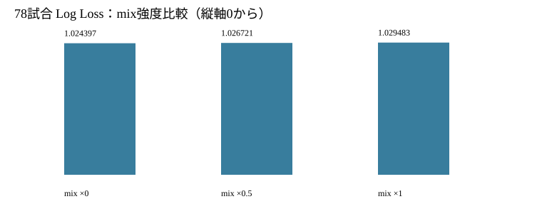

研究用team_conditions_research.pyを新設。入力、チーム別攻守影響、λ、得点分布、mixを分離した。本番forecast_pipeline・正式係数・購入処理は変更していない。これは未校正係数とmixの正式変更を禁止する今回の指示に従ったもの。現在の本番mixは従来のまま残る。新しい方向補正を導入済みと誤解しないこと。
06_calculate_fatigue.pyはリーグの消化/予定日程に、確認済みACL、保存totoのルヴァン/天皇杯等の結果、emperor_cup_eventsと手動external_match_eventsを統合。現在acl_schedule.csvは52行中confirmed12、unverified40で、40行は採用しない。external_match_events.csvは存在しない。外部大会はpartial coverageで全日程を網羅した保証はない。休養は前試合からの実時間、4日以下の間隔に負荷、直近3試合の負荷を0.35/0.20/0.10で持ち越し、14日超の中断で持越しを消す。移動は本拠地間距離×0.005、アウェー固定負荷4も加算される。実際の前会場からの連続遠征経路・帰宅有無・選手出場時間を常に取得しているわけではない。カップ出場は休養時間へ反映されるが、不明な負荷量・ローテーションは未確認。
| league | rows | coverage | travel_missing | missing_home_rest | missing_away_rest | home_external_unknown | away_external_unknown |
|---|---|---|---|---|---|---|---|
| j1 | 380 | {'partial': 380} | 0 | 10 | 10 | 42 | 42 |
| j2 | 380 | {'partial': 380} | 0 | 10 | 10 | 35 | 31 |
ACL距離は通常、acl_schedule.pyがチーム本拠地と試合地の座標から計算する。現存52行の距離欠損は0、confirmed12行のうち海外遠征6行はすべて正の距離で、実際に負荷へ接続されていた。fillna(0)は下流の防御不足として残るが、現在の遠征が距離不明で0になっている事実は確認されなかった。通常経路の座標未登録は例外。ただし旧memo上書き経路は座標未登録でも初期値0が残り得る。最初の試合で休養履歴が無い場合も休養負荷0。上流use_generic_fatigue_onlyにも欠損を0へ置く経路がある。現行conditions_v2は移動lookup欠損を通常予測前に拒否する一方、外部大会網羅性やACL不明距離の保証にはならない。修正候補はmissing距離/休養/大会coverageを別保存し、不明を既知0へ変換しないこと。新研究入力はNoneを保持し、明示欠損をfallbackしない。既にゼロ化された古い原本から真の負荷は復元しない。
旧Nextのuncertainty_calibration.signalsが(H総疲労+A総疲労)/16を使い、どちらの疲労かを捨てていた。現行Nextには疲労差からλへの方向補正は無い。新研究経路はhome/away各入力を保持し、合計と差を診断用に別出力する。攻撃のlog率変化は自チームλへ、守備の失点log率変化は相手λへ接続する。λH′=λH×exp(H攻撃変化+A守備失点変化)、λA′=λA×exp(A攻撃変化+H守備失点変化)。指数接続も研究上の構造選択で、効果量は未校正。既存範囲0.15〜4.5で制限した場合はclippedを記録し、11×11得点分布からH/D/Aを再計算。
下表は攻撃係数0.01、守備係数0.005を使用したテスト専用fixture。実データへの採用案・推奨値ではなく、歴史78試合には使っていない。14/2と2/14で方向が逆転、14/14と14/0も区別できることを確認した。
| home_fatigue | away_fatigue | lambda_H | lambda_A | H | D | A | scope |
|---|---|---|---|---|---|---|---|
| 14 | 2 | 1.14152406 | 1.36665243 | 0.31281786 | 0.26744880 | 0.41973334 | 合成テスト専用・推奨係数ではない |
| 2 | 14 | 1.36665243 | 1.14152406 | 0.41973334 | 0.26744880 | 0.31281786 | 合成テスト専用・推奨係数ではない |
| 14 | 14 | 1.21211197 | 1.21211197 | 0.36250696 | 0.27498608 | 0.36250696 | 合成テスト専用・推奨係数ではない |
| 14 | 0 | 1.13016571 | 1.39426064 | 0.30467996 | 0.26567217 | 0.42964787 | 合成テスト専用・推奨係数ではない |
天候取得は会場座標とkickoffを照合しOpen-Meteoを使用。現在feature_builderは最寄り時刻が60分以内か確認し、kickoff前後1時間と開始〜終了付近の時間窓、風速単位、取得時刻、forecast等の種別を残す。Nextのmixは雨・強雨・強風の共通signalのみ使用し、気温やチーム戦術によるλ差は使わない。weather_style_shadow.pyの仮説は存在するが本番Nextの校正済み感応度ではない。新構造では共通気象とチーム別感応度を分離し、感応度が無ければ勝手な差を作らずpending。
欠場は既存の攻守別λ加算を維持。自攻撃欠場は自λを下げ、自守備欠場は相手λを上げる。missingと人数0を区別。過去原本の欠場観測timestampは不足しており、試合前原本Aであることだけから台帳完全性は保証しない。新入力にも観測時刻を独立保存。
保存final_lambdaは既に欠場補正後なので欠場を再適用すると例外。総疲労は移動を含むため、総疲労と移動の同時加算も例外。疲労/移動をλへ適用しながら疲労mixを適用すること、天候をλと天候mixで二重利用することも拒否する。欠損疲労や既知の外部負荷欠損は係数適用時に拒否。weather sensitivityには両チームについて明示係数・参照値・根拠が必要。同じ気象でも影響を同じと決め打ちせず、データ無しで違いも捏造しない。
新疲労攻守係数・チーム別天候係数・疲労成分ごとの係数は設定していない。実データの方向補正は未適用。過去の疲労スコア自体にも固定アウェー罰則や移動の代理値が含まれ、それを実証済み生理負荷と扱わない。今の構造で校正データを渡せるが、Noneが正式設定の代わりにゼロ係数として採用されることはない。
同じ保存λ・欠場・LABを固定し、有効mixを1倍/0.5倍/0倍にした研究比較。初期39試合は元々mixなし。78試合の現行確率を全件再現。新疲労係数による予測改善を主張する実験ではない。LL/Brierは小さいほど良い。
| dimension | group | strength | n | LL | Brier |
|---|---|---|---|---|---|
| round | 1660 | 0.00000000 | 13 | 1.00376047 | 0.60148755 |
| round | 1660 | 0.50000000 | 13 | 1.00376047 | 0.60148755 |
| round | 1660 | 1.00000000 | 13 | 1.00376047 | 0.60148755 |
| round | 1663 | 0.00000000 | 13 | 0.95313061 | 0.56262226 |
| round | 1663 | 0.50000000 | 13 | 0.95313061 | 0.56262226 |
| round | 1663 | 1.00000000 | 13 | 0.95313061 | 0.56262226 |
| round | 1664 | 0.00000000 | 13 | 1.12940133 | 0.68555797 |
| round | 1664 | 0.50000000 | 13 | 1.12940133 | 0.68555797 |
| round | 1664 | 1.00000000 | 13 | 1.12940133 | 0.68555797 |
| round | 1665 | 0.00000000 | 13 | 1.04817697 | 0.62673342 |
| round | 1665 | 0.50000000 | 13 | 1.04924691 | 0.62838438 |
| round | 1665 | 1.00000000 | 13 | 1.05149976 | 0.63084068 |
| round | 1668 | 0.00000000 | 13 | 0.95151576 | 0.56793946 |
| round | 1668 | 0.50000000 | 13 | 0.96278632 | 0.57474803 |
| round | 1668 | 1.00000000 | 13 | 0.97496540 | 0.58248336 |
| round | 1670 | 0.00000000 | 13 | 1.06039883 | 0.63896935 |
| round | 1670 | 0.50000000 | 13 | 1.06200007 | 0.64043557 |
| round | 1670 | 1.00000000 | 13 | 1.06414276 | 0.64222875 |
| model_signature | absence_uncertainty | 0.00000000 | 26 | 0.99984636 | 0.59733644 |
| model_signature | absence_uncertainty | 0.50000000 | 26 | 1.00601662 | 0.60156620 |
| model_signature | absence_uncertainty | 1.00000000 | 26 | 1.01323258 | 0.60666202 |
| model_signature | early_score_model | 0.00000000 | 39 | 1.02876414 | 0.61655592 |
| model_signature | early_score_model | 0.50000000 | 39 | 1.02876414 | 0.61655592 |
| model_signature | early_score_model | 1.00000000 | 39 | 1.02876414 | 0.61655592 |
| model_signature | goal_rate_plus_style_policy | 0.00000000 | 13 | 1.06039883 | 0.63896935 |
| model_signature | goal_rate_plus_style_policy | 0.50000000 | 13 | 1.06200007 | 0.64043557 |
| model_signature | goal_rate_plus_style_policy | 1.00000000 | 13 | 1.06414276 | 0.64222875 |
| all | all78 | 0.00000000 | 78 | 1.02439733 | 0.61388500 |
| all | all78 | 0.50000000 | 78 | 1.02672095 | 0.61553929 |
| all | all78 | 1.00000000 | 78 | 1.02948339 | 0.61753676 |
各分布の確率上位10組を独立に選び、相異なる10口で13的中となる確率を積の和で厳密計算した。全試合H/D/Aを許可。ownは各方式自身の分布、originalは元final、no_mixはmix前の同じ分布で評価。分布が違うown同士の増加を実際の的中率改善と解釈しない。既存の正式購入券を再生成/置換していない。券一覧はtickets.csv。
| round | strength | probability_own | probability_original | probability_no_mix | replaced_tickets |
|---|---|---|---|---|---|
| 1660 | 1.00000000 | 0.02872124 | 0.02872124 | 0.02872124 | 0 |
| 1660 | 0.50000000 | 0.02872124 | 0.02872124 | 0.02872124 | 0 |
| 1660 | 0.00000000 | 0.02872124 | 0.02872124 | 0.02872124 | 0 |
| 1663 | 1.00000000 | 0.03248139 | 0.03248139 | 0.03248139 | 0 |
| 1663 | 0.50000000 | 0.03248139 | 0.03248139 | 0.03248139 | 0 |
| 1663 | 0.00000000 | 0.03248139 | 0.03248139 | 0.03248139 | 0 |
| 1664 | 1.00000000 | 0.02966550 | 0.02966550 | 0.02966550 | 0 |
| 1664 | 0.50000000 | 0.02966550 | 0.02966550 | 0.02966550 | 0 |
| 1664 | 0.00000000 | 0.02966550 | 0.02966550 | 0.02966550 | 0 |
| 1665 | 1.00000000 | 0.01054656 | 0.01054656 | 0.02296418 | 0 |
| 1665 | 0.50000000 | 0.01566974 | 0.01054656 | 0.02296418 | 0 |
| 1665 | 0.00000000 | 0.02296418 | 0.01054656 | 0.02296418 | 0 |
| 1668 | 1.00000000 | 0.01382267 | 0.01382267 | 0.02885666 | 0 |
| 1668 | 0.50000000 | 0.02011037 | 0.01382267 | 0.02885666 | 0 |
| 1668 | 0.00000000 | 0.02885666 | 0.01382267 | 0.02885666 | 0 |
| 1670 | 1.00000000 | 0.00595795 | 0.00595795 | 0.01030515 | 0 |
| 1670 | 0.50000000 | 0.00786088 | 0.00595795 | 0.01030515 | 0 |
| 1670 | 0.00000000 | 0.01031264 | 0.00595340 | 0.01031264 | 1 |
外部大会の収録範囲、ACLの日時/移動距離、不明負荷、会場間の実移動、出場時間・ローテーション、欠場台帳の観測/復帰時刻、気象取得時刻と時間窓、チーム特性を試合前に固定保存する。疲労総点の単純投入と、休養・移動・持越しの成分モデルを混在させず比較する。過去期間で係数推定、後続未使用期間で得点NLL・HDAのLL/Brier・校正を検証し、会場効果・既存xG/欠場補正との重複を調べる。今回の39適用試合に合わせた係数を正式採用しない。